범위: 교과서 72쪽~끝 + 학습지 — Ⅲ 화학 변화의 자발성 · Ⅳ 반응 속도
| 단원마다 5분 (×9) | ① 개념 표 읽기 (쉬운 말) → ② 이런 문제는 이렇게 → ③ 예제 따라 풀기: 답 가리고 한 줄씩 → ④ 직접 풀기 1문제 (사진 문제, 풀기 전에 “무슨 반응?” 한 줄) |
|---|---|
| 45~52분 | ⑤ 내신 디테일 O/X 20 (교과서 구석 숫자·물질 이름·함정 문장) |
| 마지막 8분 | 채점 (맨 뒤). 틀린 단원은 “헷갈리는 것”만 다시 읽기 |
| 개념 | 쉬운 말 정리 | 내 필기 |
|---|---|---|
| 발열 / 흡열 | 발열: 열을 내놓음 → 주위 온도 ↑, ΔH < 0. 흡열: 열을 빼앗음 → 주위 온도 ↓, ΔH > 0 | |
| ΔH | ΔH = H(생성물) − H(반응물). 에너지가 낮은 쪽이 안정 (발열이면 생성물이 안정) | |
| 열화학 반응식 | ① 상태 (s)(l)(g)(aq) 꼭 쓰기 ② 계수 n배 → ΔH n배 ③ 거꾸로 쓰면 부호만 반대 | |
| 생활 예 | 발열: 연소·철의 부식·손난로·CaO + 물(구제역 소독) / 흡열: 광합성·NaHCO₃ 열분해·냉각 팩(NH₄NO₃ 용해) | |
| 열량계 | Q = c × m × Δt (c 비열, m 용액 질량). 간이 열량계는 열 손실 큼 |
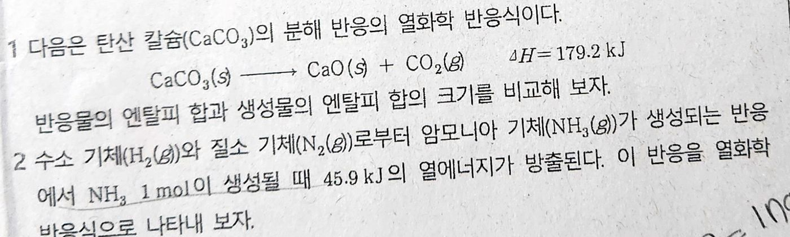
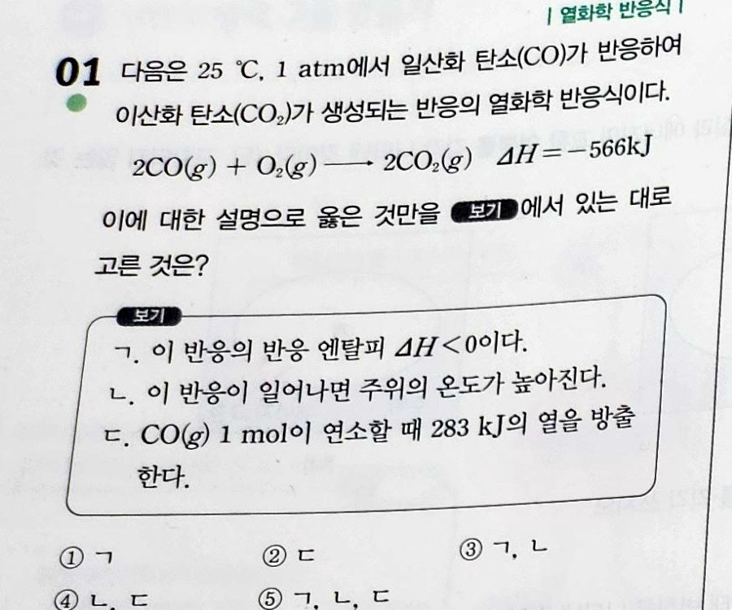
| 개념 | 쉬운 말 정리 | 내 필기 |
|---|---|---|
| 연소 | 산소와 반응해 빛·열을 내는 격렬한 산화 → 항상 발열. 완전 연소 = CO₂, H₂O 생성 | |
| 연료 비교 | mol당: 뷰테인 2877 > 에탄올 1367 > 메테인 890.5 > 수소 285.8 / 1 g당: 수소 > 메테인 > 뷰테인 > 에탄올 | |
| LNG / LPG | LNG = 메테인(CH₄), LPG = 뷰테인(C₄H₁₀) | |
| 결합 에너지 | 기체 상태 결합 1 mol 끊는 에너지 (H–H 436, 항상 +). 클수록 강하고 안정 | |
| ΔH 계산 | ΔH ≈ Σ반응물 결합 − Σ생성물 결합 (평균값이라 근삿값) |
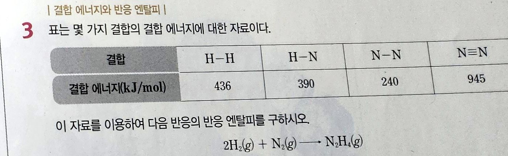
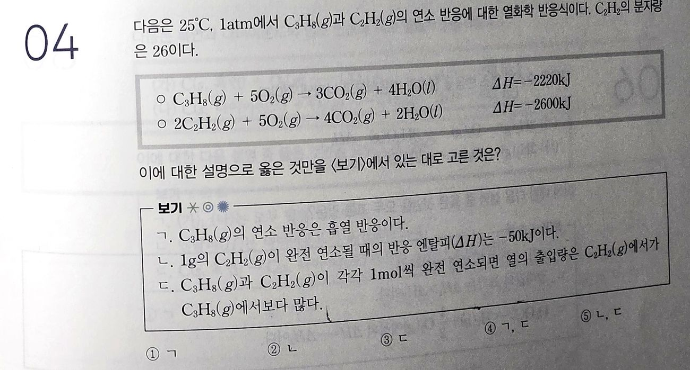
| 개념 | 쉬운 말 정리 | 내 필기 |
|---|---|---|
| 헤스 법칙 | 반응물·생성물이 같으면 경로와 관계없이 ΔH 합은 같다 (총열량 불변). 직접 못 재는 ΔH 계산에 씀 | |
| 식 조립 | 뒤집으면 ΔH 부호 반대 / n배 하면 ΔH n배 / 더하면 ΔH 도 더함 | |
| 표준 생성 엔탈피 | 25 °C, 1 atm 에서 가장 안정한 원소로부터 1 mol 만들 때 ΔH. 가장 안정한 원소(O₂, H₂, C 흑연)는 0 | |
| ΔH 계산 | ΔH° = ΣΔH°f(생성물) − ΣΔH°f(반응물) (계수 곱하기!) | |
| 동소체 | 흑연 0, 다이아몬드 +1.88 → 흑연이 더 안정 / O₂ 0, O₃ +142.7 |
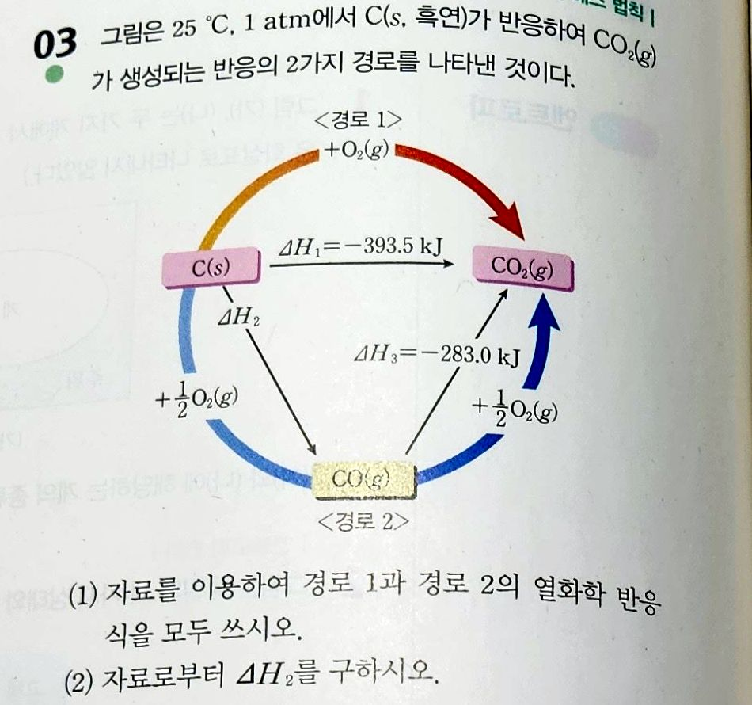
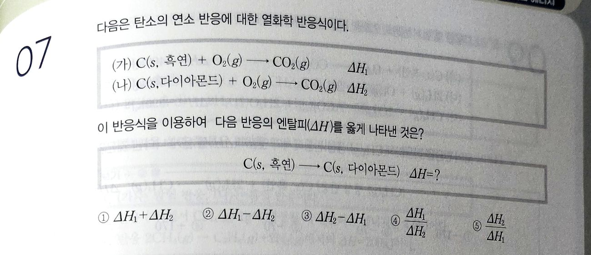
| 개념 | 쉬운 말 정리 | 내 필기 |
|---|---|---|
| 엔트로피 S | 무질서도. 고체 < 액체 ≪ 기체. 온도 ↑ → S ↑ | |
| ΔS 판단 | 기체 몰수가 늘면 ΔS > 0 (N₂ + 3H₂ → 2NH₃ 는 4 → 2 감소). 혼합·확산·승화(고→기) 증가 / 기체가 물에 녹으면 감소 | |
| 계의 종류 | 고립계: 물질 X 에너지 X (단열 밀폐 용기) / 닫힌계: 물질 X 에너지 O (뚜껑 닫은 컵) / 열린계: 둘 다 O | |
| 내부 에너지 | ΔE = E최종 − E초기. 발열이면 ΔE < 0. 전체 에너지는 보존 |
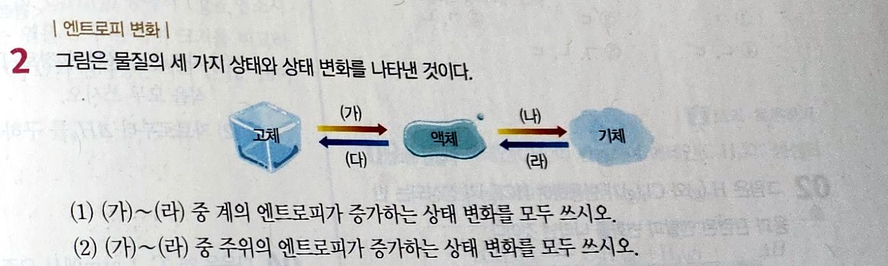
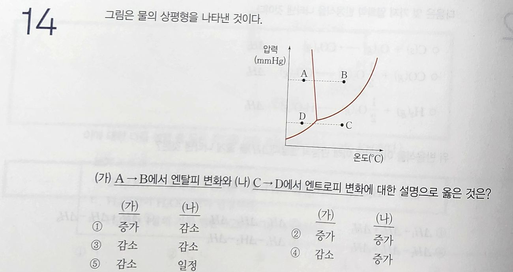
| 개념 | 쉬운 말 정리 | 내 필기 |
|---|---|---|
| 자발적 | ΔS전체 = ΔS계 + ΔS주위 > 0 이면 저절로 일어남 | |
| ΔS주위 | 계가 열을 내면(발열) 주위 엔트로피 ↑ / 흡열이면 ↓ | |
| 4가지 경우 | ΔH<0·ΔS계>0 항상 자발 / ΔH>0·ΔS계<0 항상 비자발 / 나머지 둘은 |ΔS계|와 |ΔS주위| 크기로 결정 | |
| 예 | 물의 기화·냉각 팩: 흡열인데 자발 (ΔS계가 더 큼) / 수증기 승화(서리): 발열, ΔS계 < 0 인데 자발 |
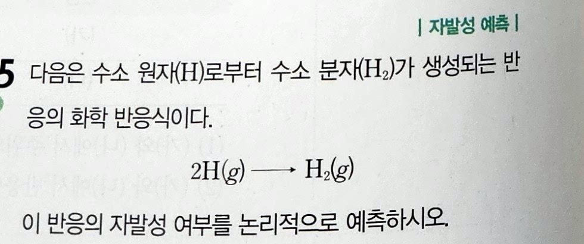
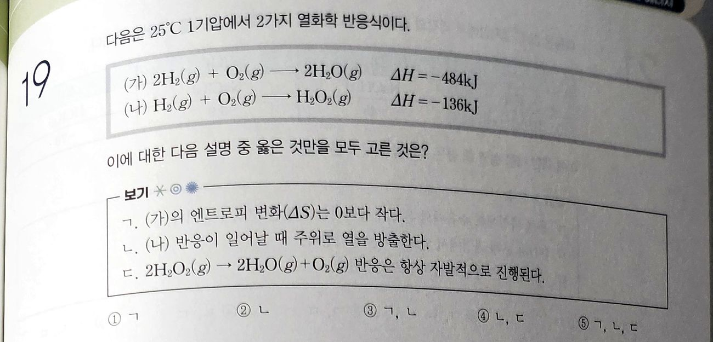
| 개념 | 쉬운 말 정리 | 내 필기 |
|---|---|---|
| 반응 속도 | v = 농도 변화 ÷ 시간 (M/s). 반응물은 (−) 붙여 양수로. 기체 반응은 압력·부피·질량으로도 측정 (Mg + HCl) | |
| 계수비 | 계수비 = 속도비. N₂O₄ → 2NO₂ 이면 NO₂ 생성 속도가 2배 | |
| 평균 / 순간 | 평균 = 할선 기울기, 순간 = 접선 기울기, t = 0 접선 = 초기 반응 속도 (가장 빠름) | |
| 속도식 | v = k[A]ᵐ[B]ⁿ. 차수 m, n 은 실험으로 (계수 X). 전체 차수 = m + n | |
| k | 농도와 무관, 온도·촉매로만 변함. 단위: 1차 s⁻¹, 2차 M⁻¹s⁻¹, 3차 M⁻²s⁻¹ |
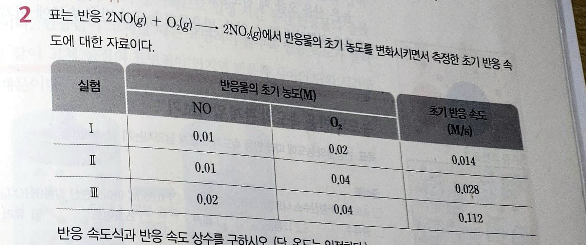
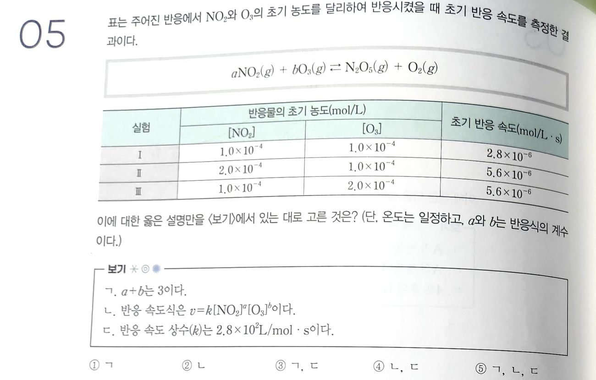
| 개념 | 쉬운 말 정리 | 내 필기 |
|---|---|---|
| 반감기 | 반응물 농도가 절반이 되는 시간 | |
| 1차 반응 | v = k[A]. 반감기가 초기 농도와 관계없이 일정 (N₂O₅ 분해, H₂O₂ 분해) | |
| 계산 | n번 반감기 후 농도 = 처음 × (½)ⁿ. 생성물은 줄어든 만큼 (계수비) | |
| 탄소 연대 | ¹⁴C 반감기 5730년 (¹⁴N 으로 붕괴). 1/8 남음 = 3번 → 17190년 |
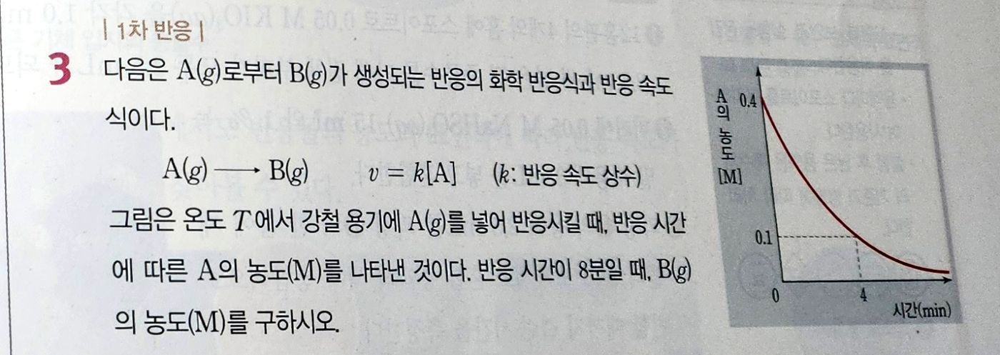
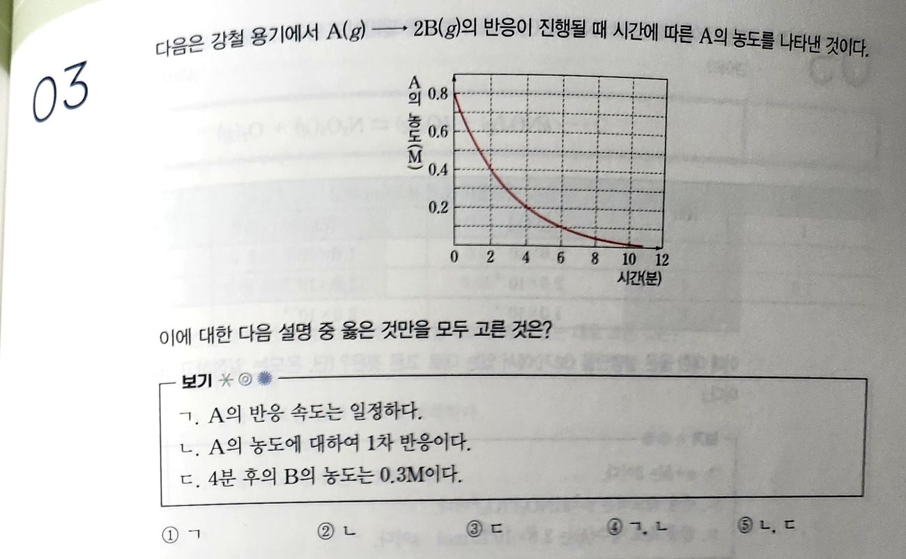
| 개념 | 쉬운 말 정리 | 내 필기 |
|---|---|---|
| 유효 충돌 | 방향이 맞고 + 에너지가 활성화 에너지(Eₐ) 이상인 충돌 | |
| 에너지 도표 | Eₐ(정) = 꼭대기 − 반응물, Eₐ(역) = 꼭대기 − 생성물, ΔH = Eₐ정 − Eₐ역. 활성화물은 불안정 | |
| 농도·압력·표면적 | 충돌수 ↑ → 속도 ↑ (Eₐ, k 그대로). 최종 생성량은 반응물 양으로 결정 | |
| 온도 | 분포 곡선이 낮고 넓게 → Eₐ 이상 분자 ↑ → k ↑, 반감기 ↓ (Eₐ 그대로). 10 °C ↑ → 속도 약 2배, 충돌수는 2%만 | |
| 생활 예 | 농도: 고압 산소 치료·아세틸렌 용접·밀폐 용기 / 표면적: 가루약·밀가루 공장 폭발 / 온도: 압력밥솥·냉장고·저온 숙성 빵 |
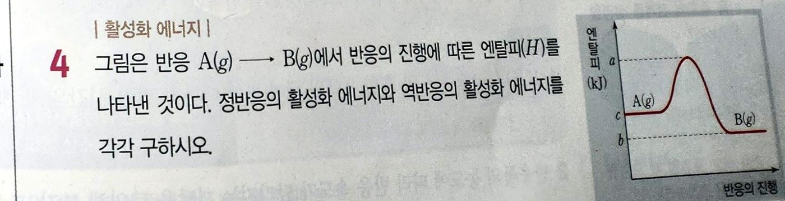
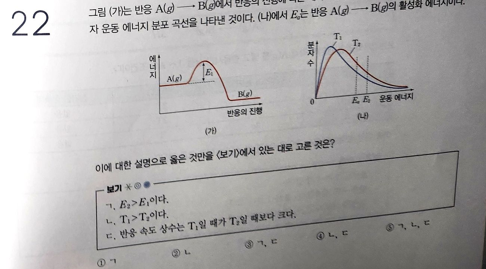
| 개념 | 쉬운 말 정리 | 내 필기 |
|---|---|---|
| 촉매 | 자신은 소모되지 않고 반응 속도만 바꿈. 반응식 화살표 위에 표시 | |
| 정촉매 / 부촉매 | 정촉매: Eₐ ↓ (정·역 둘 다) → k ↑ (KI, MnO₂) / 부촉매: Eₐ ↑ (약국 과산화 수소수의 인산) | |
| 안 바뀌는 것 | ΔH, 반응물·생성물 에너지, 최종 생성량 | |
| 환경 | 촉매 변환기 (Pt·Rh·Pd, 2NO + 2CO → N₂ + 2CO₂) · TiO₂ 광촉매 · 효소(생체 촉매, 식혜) | |
| KI 원리 | I⁻ 가 1단계에서 쓰이고 2단계에서 다시 생김 → 전체 식에 안 나옴 |
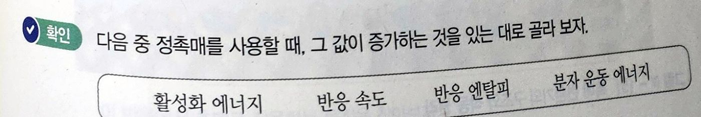
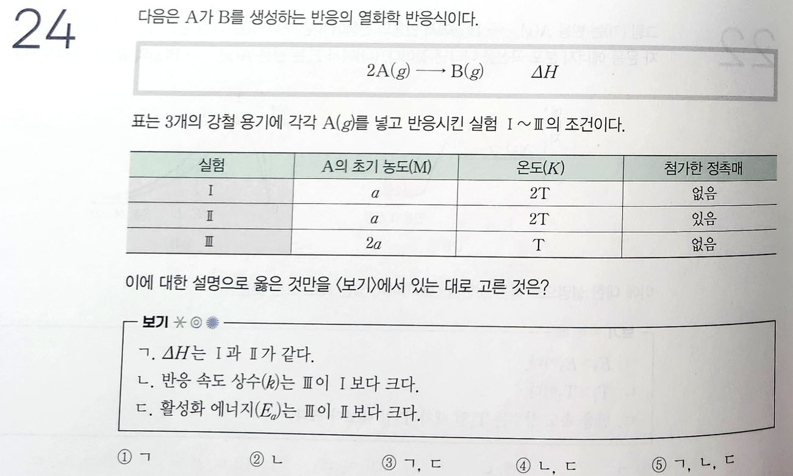
직접 풀기 1. ⑤ ㄱ, ㄴ, ㄷ ㄱ. ⭕ ΔH = −566 kJ. ㄴ. ⭕ 발열 반응. ㄷ. ⭕ CO 2 mol에 566 kJ → 1 mol에 283 kJ.
직접 풀기 2. ② ㄴ ㄱ. ❌ 연소는 항상 발열, ΔH = −2220. ㄴ. ⭕ C₂H₂ 2몰이 −2600 → 1몰 −1300 → ÷26 = −50 kJ/g. ㄷ. ❌ 1 mol: C₃H₈ 2220 kJ, C₂H₂ 1300 kJ → C₃H₈이 더 많다. (식의 계수 2를 꼭 나눠!)
직접 풀기 3. ΔH₁ − ΔH₂ (가)는 그대로 + (나)는 뒤집기(CO₂→다이아몬드) → ΔH₁ + (−ΔH₂) = ΔH₁ − ΔH₂.
직접 풀기 4. 증가 / 감소 A(고체)→B(액체): 융해 = 흡열 → H 증가. C(기체)→D(고체 쪽): 승화(기체→고체) → 무질서도 감소.
직접 풀기 5. ⑤ ㄱ, ㄴ, ㄷ ㄱ. ⭕ 기체 3몰 → 2몰. ㄴ. ⭕ ΔH = −136. ㄷ. ⭕ ΔH = (가) − 2(나) = −484 + 272 = −212 < 0, 기체 2→3몰 ΔS > 0 → 항상 자발.
직접 풀기 6. ③ ㄱ, ㄷ ㄱ. ⭕ 2NO₂ + O₃ → N₂O₅ + O₂ (N, O 원자 수 맞추기) → 2 + 1 = 3. ㄴ. ❌ Ⅰ→Ⅱ: NO₂ 2배 → 속도 2배(1차), Ⅰ→Ⅲ: O₃ 2배 → 2배(1차) → v=k[NO₂][O₃]. 차수 ≠ 계수! ㄷ. ⭕ k = 2.8×10⁻⁶ ÷ (1.0×10⁻⁴ × 1.0×10⁻⁴) = 2.8×10², 2차라 L/mol·s.
직접 풀기 7. ② ㄴ ㄱ. ❌ 곡선의 기울기가 점점 완만 → 느려진다. ㄴ. ⭕ 0.8→0.4→0.2→0.1이 같은 간격(반감기 일정) → 1차. ㄷ. ❌ 함정! 0.3은 A의 농도 근처. B = (줄어든 A) × 2 → 0.3보다 훨씬 크다.
직접 풀기 8. ① ㄱ ㄱ. ⭕ (나)에서 Eₐ = (가)의 E₁. 축에서 E₂가 Eₐ보다 오른쪽 → E₂ > E₁. ㄴ. ❌ T₁ 곡선이 더 높고 왼쪽에 몰림 → 저온 → T₂ > T₁. ㄷ. ❌ 고온 T₂에서 k가 더 크다.
직접 풀기 9. ③ ㄱ, ㄷ ㄱ. ⭕ 촉매는 ΔH를 바꾸지 않는다. ㄴ. ❌ k는 농도와 무관, 온도↑면 커진다 → 2T인 Ⅰ이 더 크다. ㄷ. ⭕ Ⅱ는 정촉매로 Eₐ↓, Ⅲ은 촉매 없음.
O/X 1. X (반대! LNG = 메테인(CH₄), LPG = 뷰테인(C₄H₁₀).) / 2. X (ΔH = +67.7 kJ, 흡열 (표 Ⅲ-1). 연소처럼 보여도 흡열!) / 3. X (열을 흡수(흡열, ΔH = +26.2 kJ).) / 4. X (에탄올(29.7 kJ/g)이 가장 작다.) / 5. X (반응물 − 생성물. 생성 엔탈피 공식과 순서 반대!) / 6. X (O₂만 0, O₃는 +142.7 kJ/mol (가장 안정한 동소체만 0).) / 7. O / 8. X (반대. 에너지는 교환, 물질은 못 함.) / 9. X (기체 용해는 ΔS < 0 (고체 용해는 보통 ΔS > 0).) / 10. X (자발성과 속도는 무관.) / 11. X (실험으로 결정. 2NO + 2H₂ 반응은 H₂의 계수 2지만 차수 1.) / 12. X (k는 농도와 무관, 온도·촉매에 따라 변함.) / 13. X (1차 반응의 반감기는 초기 농도와 관계없이 일정.) / 14. X (2 × 3 = 6가지 (곱한다).) / 15. O / 16. X (Eₐ는 그대로. Eₐ 이상 에너지를 가진 분자 수가 많아짐.) / 17. X (물의 끓는점이 높아져 온도가 높아지는 효과.) / 18. X (정·역반응 모두 작아짐.) / 19. X (촉매는 Cl (처음에 쓰이고 다시 나옴). ClO는 중간 생성물.) / 20. X (태양광 등 신재생 에너지로 물을 전기 분해해 얻은 수소. 철–니켈(Fe–Ni) 촉매로 낮은 전압에서도 분해.)